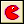
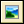
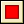
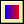
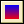
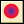
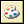
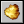

绘制精灵

绘制背景
绘制文本
你指定文字和位置。“#”符号在文字中是被解释为换行（如果你想绘制“#”号，则要用到“\#”。），这样你就可以绘制多行文字。假如文字以引号或双引号引住，则它是被解释成一表达式，例如：
'X: ' + string(x)
这样会显示实例的x坐标的值 （变量x存储的是当前的x坐标值，函数string（）可以将这个数字变成一个字符串，+号可以将两个字符串连接成一个字符串。）
绘制变形文本 此动作与上一个动作类似，但是此时您还可以指定水平和垂直缩放系数来更改文本的大小，并且可以指定文本旋转角度。此动作仅在专业版可用。

这个动作可以绘制一个矩形，需要指定矩形矩形的对角坐标，可以绘制于当前实例的绝对或相对位置。

水平渐变矩形

垂直渐变矩形
绘制椭圆
这个动作可以绘制一个椭圆，需要指定椭圆外接矩形的对角坐标，可以绘制于当前实例的绝对或相对位置。

绘制渐变圆形
绘制直线段
这个动作可以绘制一条直线段，需要指定直线的两个端点坐标，可以绘制于当前实例的绝对或相对位置。
绘制矢线
这个动作可以绘制一段矢线，需要指定直线的两个端点坐标

设定绘制颜色
全屏模式
用这个动作可以在窗口和全屏模式间切换， 你可以指定切换模式，全屏模式，以及窗口模式三个选项。
截图
这个动作你可以将游戏快照存储为一个PNG文件。
此动作仅在专业版可用。

创建特效